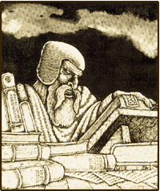

| |
Warhammer
A játék és ami mögötte van
A szerepjátékok történetének
korai idõszakában az új rendszerek kialakításának
kétféle módja volt: a félig még amatõr, félig
már profi tervezõk vagy különféle klónokat
hoztak létre az AD&D nyomdokain haladva, vagy
pedig a terepasztalos stratégiai játékokból
merítettek. (Az önállóan kifejlesztett RPG-k,
mint amilyen a Shadowrun, csak késõbb
jelentek meg a piacon.) Az elsõ változatra jó példa
az Arduin, a német Schwarze Auge és
a Palladium az általunk vizsgált rendszer
azonban a második kategóriába tartozik. A Warhammer
eredetileg figurás csatajáték volt, és egyes
verzióinak máig is csak ez a formája létezik (Warhammer
40K). A stratégiai örökség most is érezhetõ
rajta a harci jelenetek levezetéséhez például
erõsen javallott az ólomfigurák és a
terepasztal használata, ami kimondottan munka- és
költségigényessé teszi a játékot. Valószínûleg ez az elsõdleges oka a Warhammer-vásárlóközönség
viszonylagos állandóságának, mint ahogy annak
is, hogy hazánkban eddig nem igazán tudott
elterjedni. Szerencsére a rendszer elég
flexibilis, és ha a mesélõnek van némi képzelõereje,
drága figurák és elõregyártott tereplapok nélkül
is le tudja vezetni a játékot, bár a Warhammer-rajongók
“kemény magja” ezt a fajta magatartást valósággal
eretnekségnek tekinti.
A dolgok másik oldalát
tekintve viszont a csatajátékos gyökerek többé-kevésbé
megóvták a Warhammert attól, hogy fejlõdésének
korai szakaszában az AD&D erõsen uniformizáló
befolyása alá kerüljön. Noha bizonyos felszíni
jegyekben kimondottan hasonult az elsõ és mindmáig
legnagyobb RPG-rendszerhez, számos területen
sikerült megõriznie egyediségét, és átmentenie
a kilencvenes évekbe. Ez az egyediség jut
kifejezésre többek között a játékmechanizmus
alapjaiban, a karaktergenerálás folyamatában,
a mágiarendszerben és – végül, de nem utolsósorban
– a hivatalos Warhammer-világ atmoszférájában.
A játéknak természetesen vannak kimondottan
archaikus vonásai is – cikkem egy késõbbi
szakaszában ezekre is ki fogok térni –, egyelõre
azonban foglalkozzunk inkább az egyedi
jellegzetességekkel!
A legtöbb RPG-rendszer
egyfajta sajátos, idealizált középkori környezetben
játszódik. A színfalak egy tarka, hamis-pompázatos
lovagvilágot mutatnak az eszmények és az ideálok
(a minden kötöttségtõl mentes hõsök bálványozása,
a törvény elõtti egyenlõség, a szabad gazdaság)
anakronisztikusan modernek a tényleges termelési-társadalmi
viszonyok körvonalazatlanok, elnagyoltak. Az általános
összkép hemzseg a következetlenségektõl, és
az embernek az a benyomása támad, hogy az egész
világ kizárólag a játékos karakterek kedvéért
létezik. Az ilyesfajta infantilis környezet
sablonkaraktereket nevel – a mesélõk egy idõ
után csömört kapnak a mogorva, csatabárdos törpe
harcosoktól, finomkodó elf varázslóktól és
pirospozsgás képû félszerzet tolvajoktól –,
és a látszólagos elõnyök ellenére
kimondottan beszûkíti a jó szerepjáték lehetõségeit.
Valamennyi megoldás közül az a legborzalmasabb,
amikor a fantáziavilág megalkotói a legkülönfélébb
történelmi korszakokból merített mintákat dobálnak
egymás mellé minden összefüggés nélkül, a
vikingekre emlékeztetõ barbár hajóskultúrák
a fénykorát élõ középkori Spanyolországon
alapuló államokkal határosak, az ókori
Egyiptomhoz hasonló birodalmakban pedig gótikus
páncélokat viselõ lovagok kóborolnak. (Ha
valaki messzemenõ következtetéseket akar
levonni a fenti megjegyzésekbõl, helyesen teszi:
engem valóban heveny viszolygás fog el a TSR által
összefércelt Forgotten Realms-világtól.)
A Warhammer tervezõi
igen egyszerû megoldással kerülték el ezt a
veszedelmes csapdát: nem is próbálják
titkolni, hogy õk a saját világukat az igazi Földrõl,
és annak is egy bizonyos történelmi korszakáról
mintázták. Az illetõ korszak a késõ reneszánsznak
felel meg, valahol a XV.-XVI. század fordulója táján.
A Games Workshop szakemberei félelmetesen következetesnek
mutatkoznak ezen a téren: még a kontinensek
alakja is hasonlít, a fantáziaországok valóban
létezõ államalakulatok analóg megjelenítései,
nyelvi téren pedig szinte ordítóak a párhuzamok.
(A Warhammer-karakterek olyasféle neveket
viselnek, mint Jean-Paul Charpentier, Ulrich
Schatzenheimer vagy Milan Radic.) A tudományos
ismeretek és a technológia szintje ugyancsak történelmi
elõképeken alapszik: lõfegyverek léteznek
ugyan, de még kezdetlegesek és kockázatos a
használatuk az orvostudomány gyerekcipõben jár,
a járványokat a miazmás földmélyi kigõzölgéseknek tulajdonítja, a hajózás egyelõre az
evezõs gályáknál (partmenti vizek,
beltengerek) és a vitorlás karavelláknál (óceáni
utazások) tart. Kulturális diszkrepanciák csak
annyiban léteznek, amennyire azt a valós történelem
megengedi, és nagy földrajzi távolságok választják
el egymástól a más-más alapelvek szerint élõ
közösségeket.
Mindez szép és jó, mondhatják egyesek,
de hogyan lehet integrálni ebbe a következetesen
valósághû világba az olyan tényezõket, mint
a mágia vagy a nem-emberi fajok? Ez tényleg
fogas kérdés, a Games Workshop fejlesztõi
azonban kielégítõ választ adnak rá.
|
|
A
Warhammer világában
jelenleg az emberek dominálnak,
ez azonban nem volt mindig így. A
történelem négy különbözõ
fejlõdési szakaszon ment át,
mindegyikben más-más faj
uralkodott. Kezdetben voltak a
szlannok, ezek a félisteni lények,
a mágia és a tudomány mesterei,
akik szabadon utazgattak a bolygók
között, s õk hívták életre
az összes többi értelmes fajt.
Ahogy telt az idõ, egyre inkább
visszahúzódtak, elmerültek
titokzatos kísérleteikben, és a
világot fokozatosan átengedték
elsõ gyermekeiknek, az elfeknek.
Az elfek kíváncsi, törekvõ népnek
születtek kecses hajóikon bejárták
a messzi tengereket, csodálatos városokat
és birodalmakat építettek, de
nem égett bennük ugyanaz a tûz
a mindenáron megszerezni vágyott
tudás iránt, mint a szlannokban.
Harmóniában éltek önmagukkal
és a természettel, a háború,
az erõszak idegen volt tõlük
mikor megjelent a színen a Második
Nép – a törpék –, igaz barátsággal
fogadták õket. Viszálykodásra
egyébként sem lett volna okuk,
hiszen a két faj élettere különbözött,
a békés kereskedelem viszont –
éppen ezért – mindkettejük
számára gyümölcsözõnek
bizonyult. Csakhogy a törpék
harciasabb, sûrûbb vérû lények
voltak az elsõszülötteknél, és
a kapzsiság lángja idõnként emésztõ
hévvel csapott fel kebelükben.
Ez vezetett a Nagy Háború kirobbanásához,
amelynek pontos kiváltó okát |
|
|
senki sem jegyezte fel, s idõvel maguk az érintett
felek is elfeledték. A vérgõzös öldöklésnek
végül az elfek vetettek véget noha gyõzelemre
álltak, kivonultak az Óvilágból,
ismeretlen földrészekre és szigetekre távoztak
fehér árbocos hajóikon. A kapzsi, keménykötésû
törpék mohón vették birtokukba a
felszabadult területeket. És ekkor történt
a katasztrófa. |
A legendává homályosult
szlannok, akik már rég elvesztették érdeklõdésüket
a környezõ világ iránt, õserdei magányukban
veszedelmes kísérleteket folytattak. Kapukat
akartak nyitni más bolygókra, más univerzumokra
valami azonban nem úgy sikerült, ahogyan akarták,
és amikor az északi-sarki jégsivatagok fölött
fölfeslett a tér szövedéke, a nyíláson nem
egy másik nap barátságos, meleg sugarai áradtak
be, hanem a valós világok között tomboló Káosz
nyers, kiforratlan energiája. Az iszonyatos
energiakitörés végigsöpört a hómezõkön,
szele elérte a civilizált vidékeket is. Százával
dõltek romba a törpék zord fellegvárai, a
vihar flottaszámra sodorta el az elfek tengerjáró
hajóit. Ám a pusztítás nem csupán fizikai
természetû volt a Káosz beette magát a
talajba, a vízmélyi iszapba, szétterült a
levegõben, s ahová a csírái hullottak, hamar
gyökeret eresztett. Az élõlények – oktalanok
és értelmesek egyaránt – megmagyarázhatatlan
mutációkon estek át egyeseknek a teste torzult
el hátborzongató módon, mások azonban a lelkükben
hordták a rothadást – és ezek voltak a
legveszedelmesebbek. Elkorcsosult szörnyek –
hajdan-büszke elfek és törpék nyomorúságos
roncsai – özönlötték el az Óvilágot, és
nem maradtak sokáig vezetõk híján a fortyogó
Káoszból névtelen entitások emelkedtek elõ,
ártó, démoni hatalmak, a dögvész és a bomlás
megtestesülései. Azok, akik romlatlanok
maradtak, felvették a harcot a gyülevész hordák
ellen a harc azonban kilátástalannak tûnt,
hiszen a Káosz mérge belülrõl is emésztette
õket.
A szörnyû veszedelemre
minden faj máshogyan reagált. A katasztrófa a
szlannokat sújtotta leginkább: bár földrajzilag
az õ településeik estek legmesszebb az Északi-sarktól,
a belsõ fertõzésnek nem jelentett akadályt a távolság,
és az õsi nép keserves árat fizetett azért,
hogy tiltott tudományokba kontárkodott. A
szlannok ezrével estek áldozatul a mutációknak
degenerált maradékaik végül fokozatosan
elfeledték õseik tudományát, és démonimádó
korcsokká züllöttek a Dél-Amerikának
megfelelõ Lustria erdõmélyi városaiban.
Az elfek borzalommal szemlélték a megváltozott
világot, s mivel a sors kerekét visszaforgatni
nem állott hatalmukban, elhatározták, hogy
legalább néhány romlatlan területet megõriznek
– ha kell, a legkeményebb eszközökkel.
Elszigetelték hát magukat a külvilágtól a
Szigetkirályságokban és Albionban, és minden
kapcsolatot megszakítottak a többi fajjal.
Civilizációjuk fejlõdése állóvízbe
torkollott, kultúrájuk egyre inkább az öncélú
élvhajhászás, a hedonizmus rabja lett. Az
esetleges behatolókkal kíméletlenül leszámoltak,
s miközben fennhangon hirdették, hogy egyedül
õk maradtak romlatlanok, nem vették észre a Káosz
finom rozsdáját, mely egyre szorosabb béklyót
kovácsolt a lelkük köré.
A törpék – szívósak és konokak, mint
mindig – a harcot választották. Kezdetben
sokan megromlottak közülük, a megmaradtak
azonban az idõk múlásával egyfajta belsõ
immunitásra tettek szert a Káosz ellen, amely
bizonyára hajthatatlan, vaskemény természetükbõl
fakadt. Ez azonban nem egyenlíthette ki számbeli
hátrányukat, és fokozatosan alulmaradtak a Káosz
szörnyeivel vívott háborúban. Elõbb-utóbb
minden bizonnyal az írmagjuk is kiveszett volna,
ha az utolsó pillanatban nem kapnak váratlan segítséget.
Az emberek léptek színre legutoljára az
értelmes fajok közül. Az elf-törpe viszálykodás
idején civilizálatlan vadak voltak még, délrõl
szivárogtak fölfelé az Óvilágba, és mindkét
fél kíméletlenül kihasználta õket a véres
csatákban. Fajuk még nem alakult ki teljesen,
amikor az északi jégmezõkrõl lezúdult a Káosz
vihara, ezért õk voltak a legfogékonyabbak a
mutációkra, a belsõ rothadásra. Másrészt
viszont az õ ereikben még friss vér keringett,
megvolt bennük az a láng és lelkesedés, ami a
régebbi fajokból már hiányzott. A törpék
makacs ellenállása a kõsziklákéra hasonlított:
tapodtat sem hátráltak, de nem haladtak elõre
sem, és az állandó támadások egy idõ után
kikezdték és meggyengítették õket. Az emberek
ellenben úgy vágtak vissza a Káosznak, mint a féktelen
futótûz: gyilkos energiával, mindent zabolátlanul
elemésztve. Közülük kerültek ki a Káosz
legnagyobb bajnokai és legvitézebb ellenfelei
egyaránt. Csaknem hétezer évvel a szlannok bukása
után Sigmar Heldenhammer, a legendás hõs, a
Birodalom alapítója, akit istenként tiszteltek halála után, egyesítette jogara alatt az
embertörzseket és a maroknyi túlélõ törpét,
s kiûzte a Káosz hordáit az Óvilágból. Ezzel
az eseménnyel veszi kezdetét az emberek idõszámítása,
amely jelenleg a 2500-ik esztendõnél tart.
Ennyi idõ alatt persze sok
minden történt. Az emberek társadalma nem
bizonyult annyira statikusnak, mint az elfeké
vagy a törpéké: a törzsi-nemzetségi szintrõl
eljutott egészen a kései feudalizmusig. Ez a
gyors iramú fejlõdés minden bizonnyal a Káosz
erõteljes befolyásának köszönhetõ ugyanis a
Káosznak, noha tiszta formájában ellenséges és
pusztító erõ, megvannak a jó oldalai is. Nélküle
nem létezne változás, egyéniség és
dinamizmus az emberi kultúra borotvaélen táncol,
amikor kihasználja ezeket az elõnyöket, hiszen
elég egyetlen rossz lépés, és az õrület
fortyogó örvényébe zuhanhat.
Az emberek elsõ birodalma nem tartott soká,
hamarosan darabjaira hullott, s romjaiból újabb
államalakulatok keletkeztek. Ezeknek az országoknak
kivétel nélkül megvan a valóságos, történelmi párhuzamuk: maga a Birodalom – illetve
ami két és félezer év után megmaradt belõle
– a széttagoltsága teljében lévõ Német-Római
Császárságnak felel meg, Bretonnia Franciaországnak,
Estalia az 1490 elõtti ibériai államoknak,
Kislev a kései orosz nagyfejedelemségnek, a
tileai város- államok a fénykorát élõ,
reneszánsz Itáliának, a Határhercegségek a zûrzavaros
Balkánnak, Marienburg szabad városa pedig Németalföldnek.
Mindez híven tükrözõdik a földrajzi- és személynevekben is. Az Óvilág déli szomszédja az
oszmán-török birodalommal analóg Arábia ezt
szintén emberek lakják, de a kultúrájuk gyökeresen
más, mivel soha nem voltak részei a Birodalomnak. Angliának csak földrajzi megfelelõje
van, történelmi nem, Albion szigetén ugyanis a
teljes elszigeteltségben élõ elfek uralkodnak.
A törpék és az elfek máskülönben egy
letûnt korszak maradványai az Óvilágban együttes
számarányuk a népesség egy százalékát sem
éri el. Jóval többen vannak náluk a félszerzetek,
bár az emberekhez képest még így is elenyészõ
kisebbséget alkotnak. Õk összefüggõ tömbben
élnek a Birodalomban, a Császár személyes védelme
alatt, és mindenkori vezetõjük – a nagythán
– választófejedelmi rangot visel. Ez a barátságos,
békeszeretõ faj valóságos rejtély az Óvilág
legtöbb tudósának az emberekkel együtt
bukkantak fel a történelem színpadán, és õsidõk
óta szorosan kötõdtek hozzájuk, gyakorlatilag
a védõszárnyuk alatt éltek. Mivel a félszerzetek
teljesen immunisak a Káosz mindennemû befolyására,
egyes egyetemi szaktekintélyek az utolsó
romlatlan szlannok kétségbeesett kísérletének
tekintik õket egy olyan faj megteremtésére,
amely visszahódíthatja a világot a Káosztól.
Ha ez valóban így van, a kísérlet totális
kudarc lehetett, a félszerzetek ugyanis tényleg
megronthatatlanok, viszont a konyhakésnél
veszedelmesebb vágószerszámok látványától
az ájulás kerülgeti õket, és úgy általában
minden gondolatuk a hasuk körül forog.
Kívülrõl nézve az Óvilág
terjeszkedõ, fejlõdõ, dinamikus társadalom
benyomását kelti, ha azonban alaposabban szemügyre
vesszük a helyzetet, mindenütt riasztó jeleket
láthatunk. Keleten és délkeleten, ahol
elhagyott, romos törpefellegvárak merednek a füsttõl
fekete égre, káoszhordák tivornyáznak a kiégett
pusztaságokban, s idõrõl idõre hatalmas hullámokban
indulnak meg az Óvilág ellen. A Határhercegek,
a kislevi szláv nagyfejedelem meg a norscai
fjordok között tanyázó barbár hajósok
gyilkos csatákban verik vissza az ismétlõdõ támadásokat,
pedig a hátországból alig kapnak támogatást.
És emögött talán több is rejlik, mint az elkényelmesedett
nemesurak és bürgermeisterek nemtörõdömsége
és hamis biztonságérzete: a Birodalom és
Bretonnia arisztokratái különös kultuszoknak
hódolnak, a zsúfolt városok csatornáiból
fejhangú kántálás száll az ég felé, s a dúsgazdag
tileai kereskedõket idõnként furcsa látogatók
keresik föl magányos kõtornyokból. Ahová a
Káosz nem törhet be fegyverrel, oda lopva,
alattomban fészkeli be magát a boszorkányvadászok
és Sigmar fanatikus templomosai pedig elvakult
buzgalmukban néha többet ártanak, mint használnak.
|
Túlzás
nélkül állíthatom, hogy egyetlen más
fantasy-szerepjáték esetében sem találkoztam
ehhez fogható háttérrel. Ami a
legjobban megragadott benne, az a teljesen
egyedi hangulat – amelynek megformálásához
nem csekély mértékben hozzájárul,
hogy a Games Workshop megnyerte részidõs
illusztrátornak a zseniális John
Blanche-ot. A Warhammer világában
a tarka, felszíni nyüzsgés alatt sötét
erõk munkálkodnak, a horrorisztikus
elemekben bõvelkedõ kalandok cselekményét
titkos ármányok szövik át meg át. A
gyõzelem távoli, elérhetetlen eshetõség,
a hõsök sorsa általában a tragikus bukás.
A színpompás farsangi álarcok mögött
a döghalál képe rejtõzik egy jó mesélõ
az emberi lélek sötét oldalá- nak
poe-i mélységeibe küldheti a nyomasztó
túlerõ ellenében vergõdõ játékosokat.
Hátborzongató környezet ez, egyszerre
vonzó és taszító egyesek low
fantasynek nevezik ezt a fajta irányzatot.
Kétségtelen persze, hogy nem mindenki
lel benne maradéktalan élvezetet akik a
könnyed és napfényes kalandokat
szeretik, ahol a jó ügy a végén mindig
gyõzedelmeskedik, a hõs lovag pedig
ellovagol fehér paripáján, nyergében a
szerelmes lelkû királykisasszonnyal,
azok jobban teszik, ha más, hagyományosabb
szerepjátékokat választanak. |
|
A Warhammer töretlen népszerûségének
egyik okát – mint a fentebbiekbõl kiderült
– a rendkívüli gonddal kidolgozott környezetben
vélem megtalálni. A másik minden kétséget kizáróan
a karakteralkotás folyamata, amelyben a
fejlesztõk teljesen egyedülálló megoldást
alkalmaznak.
A Warhammerben a
karaktereknek tizennégy fõjellemzõjük van ez
elsõ pillantásra kissé soknak tûnik, de nem
szabad elfelejteni, hogy ebben a rendszerben
nagyon kevés másodlagos számérték szerepel. A
fõjellemzõk itt sokkal aktívabb értékek, mint
teszem azt az AD&D-ben a játékmechanizmus
szinte minden esetben hozzájuk nyúl vissza,
nagyon ritka az olyan kockadobás, ami nem
valamelyik fõjellemzõn alapszik. A fõjellemzõk
kezdõértéke (amely egyes esetekben 1 és 100, másokban
1 és 10 között mozog) kizárólag attól függ,
milyen fajt választ a játékos a karakterének.
Az elf karakterek Intelligenciája például
2K10+40, az összes többi fajé 2K10+20.
Ez igen érdekes megoldás, és egyben
magyarázattal szolgál a fantasy-RPG-k egyik
neuralgikus problémájára. Az AD&D-ben például
gyakran vetõdik fel a kérdés, hogy miért nem
lehetnek a törpék mágusok? Erre különféle
nyakatekert magyarázatokat szokás adni, a Warhammerben
azonban a helyzet sokkal egyszerûbb. Senki sem
tiltja meg a törpe karakternek, hogy varázslónak
álljon viszont ennek a pályafutásnak elég
szigorú követelményei vannak, és a törpéknek
egyszerûen olyanok a faji adottságai, hogy
nagyon ritka közöttük az, aki megfelel ezeknek
a követelményeknek. Törpe mágusok tehát
vannak, csak éppen kevesen.
A fõjellemzõk meghatározása után a játékosnak
választania kell a négy lehetséges kasztcsoport
között. Ezek: harcos, vándor, zsivány és akadémikus.
Minden kasztcsoportnak vannak bizonyos elõfeltételei,
vándor például csak abból a karakterbõl
lehet, akinek a Célzóérték fõjellemzõje
legalább 30. Ezzel azonban még távolról sem zárult
le a karakteralkotás folyamata.
A négy kasztcsoportba összességében száznál
is több pályafutás tartozik, a népszónoktól
a hullarablón keresztül a favágóig. Ezek a pályafutások
egyáltalán nem hasonlítanak az AD&D
kasztjaira: sokkal kevésbé kötöttek és
merevek, inkább foglalkozásnak lehetne nevezni
õket. Lehetõséget nyújtanak a különféle fõjellemzõk
fejlesztésére, és ami a legfontosabb: szabadon
átjárhatóak, bizonyos szabályok szerint váltogatni
lehet õket. A játékos következõ dolga, hogy pályafutást
válasszon a karakterének.
Igaz, a Warhammer
alapkönyve szerint ezt kockadobással kell eldönteni,
ez azonban egészen kapitális melléfogás. Tegyük
fel, hogy az ember nem kis szerencsével nagyszerû
értékeket dobálgat össze magának, és
szeretne fejvadász lenni, a véletlen szeszélye
folytán azonban patkányfogóként kell kezdenie
kalandos élettörténetét! Ez az eleve elvetélt
szabály valószínûleg azért került be az
alapkönyvbe, hogy a játékosnak ne kelljen húsz-harminc
pályafutás leírásán átrágnia magát, mielõtt
választana közülük aki azonban ennyi fáradságot
sem tud venni magának, az ne akarjon Warhammert
játszani. Ráadásul a kocka ördöge néha meghökkentõ
kombinációkat produkál, például a törpe
lovas apródok és a félszerzet testõrök esetében.
További hibája ennek a szisztémának, hogy csak
minimális eséllyel lehet valakibõl mágiahasználó
karakter: az induláskor elérhetõ pályafutások
között összesen egy ilyen van – a varázsinas
–, azt pedig elég nehéz véletlenül kidobni.
Más szóval a játéknak csak úgy van értelme,
ha a játékosok szabadon választhatnak az alap-pályafutások
közül.
A pályafutás két szempontból is alapvetõ
szerepet tölt be. Egyfelõl ez határozza meg a
karakter másodlagos képességeit: minden pályafutáshoz
tartozik néhány képzettség, amit a karakter
induláskor automatikusan megkap. Ezeket még két-három
további képzettség egészíti ki, a faj, az életkor
és a kasztcsoport függvényében. A képzettségeknek
nincs számszerû értékük, fokozatuk: vagy
rendelkezik velük valaki, vagy nem. (Ezen a téren
például a M.A.G.U.S. rendszere némileg
differenciáltabb.) A pályafutás második –
sokkal fontosabb – feladata az, hogy meghatározza
a karakter további fejlõdésének irányát.
A Warhammerben a karakterek a
megszokott módon Tapasztalat Pontokat gyûjtenek
a játék folyamán, mivel azonban szintjük
nincsen, ezeket a pontokat a fõjellemzõik növelésére
fordítják. Minden pályafutás megszabja, hogy a
karakter melyik fõjellemzõjét növelheti és
mennyivel. Azokat a fõjellemzõket, amelyeknek a
javítását a pályafutás nem engedélyezi, a
karakter nem növelheti, hiába lenne rá
Tapasztalat Pontja. (A gladiátornak hivatása
gyakorlása során számtalan alkalma nyílik,
hogy javíthasson a Támadóértékén, az
Intelligenciája azonban feltehetõleg megmarad az
eredeti szinten.) Egy idõ után a karakter eljut
arra a pontra, amikor hiánytalanul kiaknázta az
adott pályafutás által nyújtott lehetõségeket.
Ilyenkor – amennyiben tovább akar fejlõdni –
pályafutást kell váltania. Ez természetesen
szintén Tapasztalat Pontba kerül, mint ahogy az
új pályafutás által kínált új képzettségekért
is “fizetni” kell, azokat már nem kapja meg
automatikusan a karakter. A váltást azonban
szigorú megkötések korlátozzák: minden pályafutás
leírásánál fel vannak tüntetve az úgynevezett
“karrier-kijáratok”, vagyis az új pályafutások,
amelyekbe a régi befejezése után tovább lehet
lépni. Ha a karrier-kijáratok közül egyik
sincsen ínyére, a karakter csinálhat tabula rasát
is, és kedve szerint választhat magának egyet
az alapályafutások közül (nem feltétlenül
az eredeti kasztcsoportjában), ehhez azonban több
Tapasztalat Pontra van szükség.
Ennek az elsõ pillantásra
igen bonyolultnak tûnõ, valójában azonban
viszonylag könnyen átlátható rendszernek a célja
a karakterfejlõdés valósághû modellezése. A
karakterek nincsenek merev korlátok közé szorítva:
belekóstolhatnak a legkülönfélébb pályafutásokba,
és ha valami nem tetszik nekik, egyszerûen átnyergelnek
egy másikra. A lehetõségek száma szinte határtalan:
lássunk talán egy példát is rá!
A nyugalomba vonult zsoldoskapitány
kupeckedésre adja a fejét, de tisztességes úton
nem tud elég pénzt keresni a családja fenntartására,
így hát elõbb csempészáruk forgalmazásával
foglalkozik, majd tanul egy kis fémmûvességet,
és megpróbálkozik a pénzhamisítással.
Hamarosan rájön azonban, hogy ebben az üzletágban
igazi nagymenõk is vannak, akik nem kedvelik az
új fiúkat, ezért belekontárkodik egy kicsit a
mágiába, hogy szükség esetén meglepetést
tudjon okozni ellenfeleinek. Sikerül is fölébük
kerekednie, ám a pórul járt vetélytársak közül
az egyik titokban a Káosz szolgája, és démoni
segítségért folyamodik. Amikor hõsünk visszatér,
hajlékát romokban találja, családját
elhurcolták a szörnyetegek. Nyomkeresõnek áll
hát, felövezi régi, hûséges kardját, és
hosszú hónapokon át követi a rablókat, mikor
azonban utoléri és néhány varázslat segítségével
legyõzi õket, rá kell döbbennie, hogy elkésett:
szerettei már halottak. Elkeseredésében belép
egy harcoló egyházi rendbe, beavatást nyer az
isteni misztériumokba, és leteszi a boszorkányvadászok
szent esküjét: soha nem fogja menekülni hagyni
szomjazó pengéje elõl a Káosz egyetlen torzszüleményét
sem!
|
Egy ilyen történet a legtöbb más
RPG-ben kissé bonyodalmas volna - ha
ugyan nem elképzelhetetlen - a Warhammer
szisztémája azonban elég rugalmas
ahhoz, hogy a segítségével valóra
lehessen váltani. Egyúttal kiviláglik
belõle a rendszer másik fontos sajátsága:
a legtöbb elõnnyel kecsegtetõ pályafutások
nem érhetõk el induláskor azonnal, elõtte
néhány bevezetõ pályafutást kell
teljesíteni, azaz tanulni és gyakorolni.
A fenti példában szereplõ zsoldoskapitánynak sok-sok ezer Tapasztalat Pontjába
kerültek ezek a kalandok. |
|
A pályafutás-szisztéma
egyébként nem teljesen ismeretlen a szerepjátékok
világában: számos RPG – például a
MegaTraveller vagy a Mutant Chronicles –
alkalmaz valami hasonlót. A Warhammer
egyedisége abban rejlik, hogy a rendszer az összes
többi RPG-ben a karakter hátterének kialakításához
nyújt segítséget, mihelyt a voltaképpeni
kalandozás megkezdõdik, azonnal érvényét
veszti. A Warhammerben ezzel szemben a pályafutások
váltogatása a tényleges játékhoz tartozik, és
igen jelentõs kihatása van a karakterek
mindenkori tevékenységére. Elméletileg az is
lehetséges, hogy egy karakter mind a négy
kasztcsoportban teljesítse az összes fontosabb pályafutást,
ám ez ugyanúgy a “tápos” címszó alá
tartozik, mint a 18./16./17. szintû fejvadász/varázsló/Arel-papok
a M.A.G.U.S.-ban.
A pályafutások teljesítéséhez szükséges
Tapasztalat Pontokat természetesen meg is kell
szerezni valahogy, és ezzel máris eljutottunk a Warhammer
játékmechanizmusához. Mint minden jó rendszer, ez is üdítõen egyszerû. Ha a karakter
olyasmit akar csinálni, aminek a sikeres
kimenetelét nem veheti biztosra (például
nekiveselkedik, hogy fejbevágjon valakit a buzogányával),
elõször is meg kell keresni azt a fõjellemzõt,
amely a legközvetlenebbül kapcsolódik az illetõ
feladathoz (adott esetben ez a Támadóérték).
Ha a fõjellemzõ értéke 1 és 100 között
mozog, nem csinálunk vele semmit, ha 1 és 10 között,
beszorozzuk tízzel. Az így kapott érték a százalékos
esély, hogy a kérdéses cselekedet sikerrel jár-e.
Amennyiben a karakter rendelkezik olyan képzettséggel,
amely vonatkozhat az illetõ feladatra, a siker
vagy automatikus, vagy a százalékos esély megnõ,
a kalandmester belátása szerint. Dióhéjban
ennyi volna az egész az összes többi szabály
ezeknek az alapelveknek a variálásából adódik.
A Warhammer harcrendszere a szó
szoros értelmében életveszélyes és mi mást
lehet elvárni egy jó harcrendszertõl? Az
egyetlen hiba, hogy a fegyverek nincsenek eléggé
részletezve nem sok múlik azon, hogy valaki
szekercével vagy bottal hadakozik-e, és a bicska
meg a kétkezes csatacsillag között csak egy
opcionális táblázat tesz különbséget.
Sikeres támadás esetén kidobjuk az okozott
veszteséget (amit módosít a támadó fél
Ereje, illetve a védekezõ fél Állóképessége
és páncélzata), majd meghatározzuk, hogy
melyik testrészt érte károsodás. A veszteség
a karakterek Seb Pontjaiból vonandó le az induló
karaktereknek ebbõl 5-6 van, ami nagyjából három
sebesülésre elég, ha az illetõ közepes vértezetet
visel, és nem történik túlütés (merthogy létezik
ilyen is). Ha a Seb Pontok elfogynak, még nincs
nagyon nagy baj, a karakter harcképes marad,
viszont minden további sikeres támadás kritikus
találatnak számít, és kockadobást von maga után
egy kapcsolódó táblázaton. (Akinek korábbi
tapasztalatai alapján esetleg balsejtelmei támadnának,
azt sietve megnyugtatom: az egész játékban ez
az egyetlen táblázat jut aktív szerephez.) A táblázatból
aztán ilyesféle eredményeket olvashatunk le:
"Fegyvered állcsúcson találja
az ellenfelet, akinek eltörik az állkapcsa, és
hátracsúszik az agy alsó részébe. Ellenfeled
összeroskad, és 1K6 körön belül meghal, ha
nem kap orvosi segítséget. Ha sikeres elsõsegélyben
részesül, ellenfelednek Állóképesség-próbát
kell tennie amennyiben kudarcot vall, 10 pontot
veszít minden százalékos fõjellemzõjébõl,
maradandó agykárosodás miatt."
Egy másik gyöngyszem:
"Csapásod teljesen összezúzza
ellenfeled vállát – szétroncsolt, tépett hústömeg
marad belõle csupán, amelybõl mindenfelé
csontszilánkok állnak ki. Az egyik csontszilánk
a véletlen szeszélye folytán felhasít egy fõverõeret,
s ellenfeled rögtön a földre roskad, szétzúzott
vállából sugárban fecskendezik a vér. A sokk
és a vérveszteség azonnali halálhoz
vezet."
Mivel a játékban kifejleszthetõ
legkeményebb és legtapasztaltabb karakternek
legfeljebb 16 Seb Pontja lehet, ajánlatos jó páncélokat
viselni, mihamarabb elsajátítani a Kitérés és
a Szerencse képzettségeket, és igen jámborul
viselkedni, ha az embert egy ingerlékeny óriással
hozza össze a sors.
Hátravan még a mágiarendszer, ami
pontszisztémával mûködik, és nem tartalmaz
ugyan forradalmi újításokat, de a céloknak tökéletesen
megfelel. A Warhammer nem favorizálja különösebben
a papokat és a varázslókat, bár elég
terjedelmes fejezetben foglalkozik velük. Ha
valaki pap vagy varázsló szeretne lenni,
igencsak kemény próbatételek várnak rá. Hogy
a magas követelményeknek megfeleljen, elõbb
teljesítenie kell néhány unalmas és nehéz
alap-pályafutást, és kezdetben elég gyéren
csordogál az a bizonyos varázserõ. A fejlõdés
azért is lassú, mert a mágiahasználó
karakternek a pályafutás-váltásokon és a képzettségeken
kívül a varázslatokért is Tapasztalat
Pontokkal kell fizetnie. Egy idõ után azonban
– nagyjából három pályafutás teljesítését
követõen – megváltozik a helyzet, és a
beavatott elõtt megnyílnak a mágia magasabb mûhelytitkai.
Az ilyen karakterek már joggal lehetnek dölyfösek
és magabiztosak, van mire felvágniuk.
|
 |
A
mágia egyáltalán nem
mindennapos jelenség a Warhammer
világában: elég kevesen értenek
hozzá, hiszen – mint a fentiekbõl kiderült – egyáltalában
nem könnyû megtanulni. Noha aránylag
sok olyan pályafutás van,
amelyik elérhetõvé teszi a Varázslás
képzettséget – az Óvilágban
nemcsak “közönséges” papok
és varázslók élnek, hanem
druidák, elementalisták,
nekromanták, démonológusok,
alkimisták és illuzionisták is
–, viszont szinte mindegyikhez
irgalmatlanul nehéz eljutni. Ebbõl
következik, hogy a köznapi ember
szinte soha nem találkozik a mágiával,
és még a kalandozók körében
is ritkaságnak számít az ilyen
esemény – hacsak persze nincs közöttük
egy beavatott. Ráadásul a mágiahasználó
karakterek nagy része
visszavonultan él, nem érintkezik
a környezõ |
|
|
világgal, és ezt jó okkal teszi: a druidáknak a
vallásuk írja elõ az erdõmélyi magányt,
a démonológusok és a nekromanták elõbb-utóbb
visszataszító testi változásokon esnek
át, az illuzionisták hivatalból nem
szeretik felhívni magukra a figyelmet. Ez
a tényezõ megintcsak tovább árnyalja a
Warhammerrõl alkotott képet,
hiszen a legtöbb fantasy-szerepjátékban
még a fákról is gonosz varázslók
potyog- nak. |
Minden pozitív vonása mellett a Warhammernek
is van néhány hibája, melyek elsõsorban a
szerepjátékok gyermekbetegségeit tükrözik. Például
a karakternek indulés elõtt jellemet kell választani,
ami mesterséges erkölcsi kategóriák közé
szorítja a fiktív személyiséget. A választék
minden, csak nem eredeti: Kaotikus-Gonosz-Semleges-Jó-Törvényes.
Az AD&D-tõl mindössze annyiban különbözik,
hogy az eredetileg kereszt alakú jellemdiagram
itt lineárissá válik, teljesen érthetetlenül.
A jellem koncepciója olyannyira nem illik a remekül
felépített Warhammer-világba, hogy a
leghelyesebb mindenestül kihajítani.
A másik alapvetõ probléma a Warhammerhez
kiadott modulokban jelentkezik. Általában ötletesek, fantáziadúsak és elképesztõen
veszedelmesek, ami nem is volna baj, de van egy
komoly hibájuk: a cselekmény legnagyobb része
aprólékosan feltérképezett barlangokban, várkastélyokban és pincerendszerekben folyik. Ízlés kérdése
persze, de ezen a TSR által sokáig favorizált
“dungeon-delving” típusú szerepjátékon már
régen túllépett a világ. Tudomásul kellene
venni, hogy a fontos események általában nem a
föld alatt történnek, és az ajtó nyit-szörny
megöl-kincs összeszed rutinmódszer lassan kezd
idejétmúlttá válni, még a számítógépes játékokban
is. Szeren- csére a legújabb Warhammer-kiadványokban
már érezhetõ a törekvés, hogy
megszabaduljanak ettõl a terhes örökségtõl.
Mindent összevetve: a Warhammer a
lehetõ legjobb választás azoknak a szerepjátékosoknak,
akik kedvelik a nyomasztó atmoszférájú, zord
hangulatot árasztó, könnyen végzetessé váló
környezetet. A játékhoz alapvetõen csak a 360
oldalas szabálykönyvre van szükség, amely kemény-
és puhafedeles kiadásban egyaránt megjelent,
viszonylag elfogadható áron ha azonban valaki
alaposabban el kíván mélyedni a Káosz szörnyisteneivel
és kultuszaikkal kapcsolatos tanokba, érdemes
megvásárolnia a Realms of Chaos kiegészítõt
is. Egyébként a kiadványok minõségi
kivitelben készülnek: nem kopik le a fényezés,
nem hullik szét a kötés, és gyakran még a
modulok is kemény borítóval jelennek meg. Hiába,
meglátszik, hogy a Games Workshop nem amerikai cég,
hanem angol...
Írta: Kornya Zsolt
(Rúna III./3., 1997. július
Kézirat kelte: 1994. december)
|
|